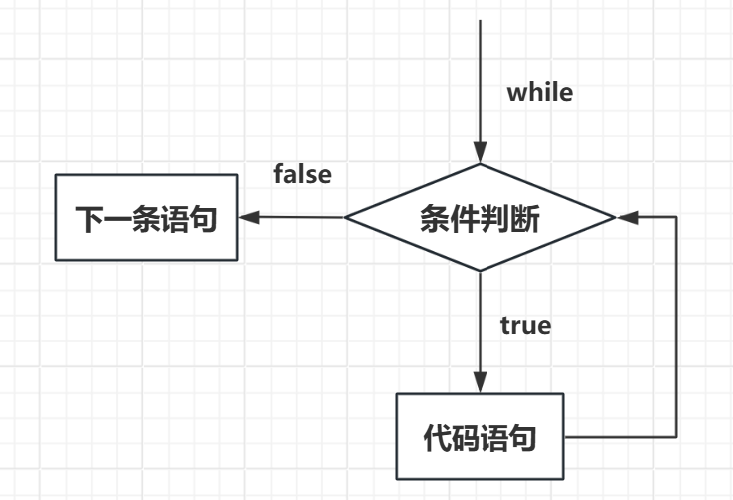
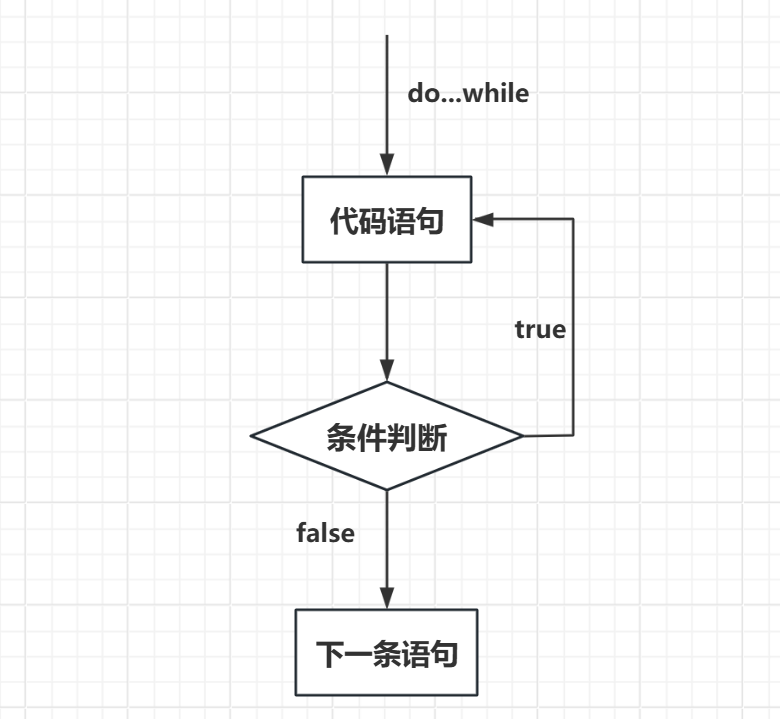
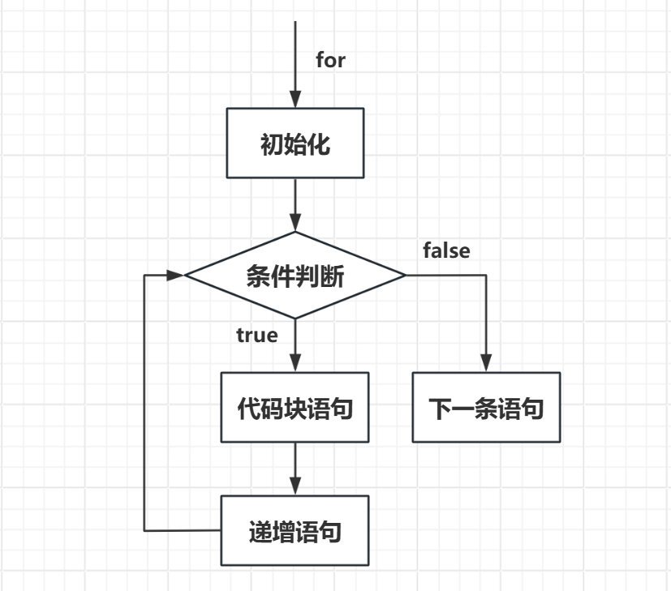
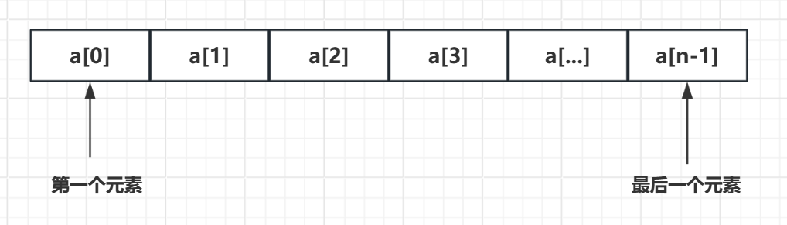

C语言
在过去40多年里，C语言已成为最重要、最流行的编程语言之一。近20年来，虽然许多人都从C语言转而使用其他编程语言（如，C++、Java、Python等），但是C语言仍凭借自身实力在众多语言中脱颖而出。在学习C语言的过程中，会发现它的许多优点，如：
- 高效性
- 灵活性
- 可移植性
- 应用范围广
通过学习C语言不仅能掌握一门强大的编程语言，还有助于理解计算机系统底层，也能为学习其他编程语言打下坚实的基础。
本教程简单介绍了 C 语言需要掌握的主要内容，主要针对非CS类专业的读者，由于篇幅限制本教程只是抛砖引玉，文末附带了推荐学习的课程和书籍以供进一步的学习。
环境配置¶
-
Dev-C++： DevC++下载及安装教程
-
C VScode： 安装VScode并安装C拓展即可——教程：C VScode | 菜鸟教程
数据类型、变量、常量¶
基本数据类型¶
- 整型（int、short、long long、unsigned）
- 浮点型（float、double、long double）
- 字符型（char）
- 布尔型（bool）
变量的声明与定义、变量的初始化¶
// 声明与定义
// 格式为 type variable_list；
int a,b,x,y;
float f;
char c;
// 初始化 type variable_name = value;
int a = 1, b=2;
float f = 1.732;
bool flag = true;
常量的两种定义方式
格式化输入/输出¶
printf()用于格式化输出，其格式为：
scanf()用于格式化输入，其格式为：
两个函数均使用格式字符串和参数列表，需掌握格式字符串中常用的转换说明，如%c、%d、%f等。
运算符、表达式和语句¶
了解并使用基本运算符，重点掌握常见运算符的优先级
- 算术运算符
- 关系运算符
- 逻辑运算符
- 位运算符
- 赋值运算符
- 杂项运算符
表达式
由运算符和运算对象组成，每个表达式都有一个值
语句
C语言中几乎所有语句都以分号;结尾
循环、分支和跳转¶
while 循环

do...while 循环

for 循环

if else 分支、跳转语句
// 基本格式
if(boolean_expression 1)
{
/* 当布尔表达式 1 为真时执行 */
}
else if( boolean_expression 2)
{
/* 当布尔表达式 2 为真时执行 */
}
else if( boolean_expression 3)
{
/* 当布尔表达式 3 为真时执行 */
}
else
{
/* 当上面条件都不为真时执行 */
}
switch 语句
- switch 后面的表达式的值将会与每个 case 后面的常量值进行比较，直到找到匹配的值或者执行到 default（如果存在）。
- 如果找到匹配的值，将执行相应 case 后面的代码块，然后跳出 switch 语句。
- 如果没有匹配的值，并且有 default，则执行 default 后面的代码块。
- 如果没有匹配的值，并且没有 default，则跳过整个 switch 语句直到结束。
// 基本格式
switch(expression){
case constant-expression :
statement(s);
break; /* 可选的 */
case constant-expression :
statement(s);
break; /* 可选的 */
/* 可以有任意数量的 case 语句 */
default : /* 可选的 */
statement(s);
}
break 语句的使用： 在每个 case 标签的代码块结束处通常需要使用 break 语句来终止 switch 语句的执行。如果没有 break 语句，程序将会继续执行下一个 case 标签中的代码，直到遇到 break 语句或 switch 语句结束。
函数¶
函数（function） 是完成特定任务的独立程序代码单元。使用函数的好处：
- 省去编写重复代码的苦差。如果程序要多次完成某项任务，那么只需要编写一个合适的函数，在需要时调用即可，也可在不同程序中调用同一个函数
- 可以让程序更加模块化。不仅能提高代码的可读性，还便于后期修改、完善
声明、定义、使用函数
#include <stdio.h>
/* 函数声明 */
int max(int num1, int num2);
int main ()
{
/* 局部变量定义 */
int a = 100;
int b = 200;
int ret;
/* 调用函数来获取最大值 */
ret = max(a, b);
printf( "Max value is : %d\n", ret );
return 0;
}
/* 函数返回两个数中较大的那个数 */
int max(int num1, int num2)
{
/* 局部变量声明 */
int result;
if (num1 > num2)
result = num1;
else
result = num2;
return result;
}
数组和指针¶
C 语言支持 数组 数据结构，它可以存储一个固定大小的相同类型元素的顺序集合。数组是用来存储一系列数据，但它往往被认为是一系列相同类型的变量。
所有的数组都是由连续的内存位置组成。最低的地址对应第一个元素，最高的地址对应最后一个元素。
数组中的特定元素可以通过索引访问，第一个索引值为 0。
C 语言还允许我们使用指针来处理数组，这使得对数组的操作更加灵活和高效。

声明、定义、使用数组
#include <stdio.h>
int main ()
{
int n[ 10 ]; /* n 是一个包含 10 个整数的数组 */
int i,j;
/* 初始化数组元素 */
for ( i = 0; i < 10; i++ )
{
n[ i ] = i + 100; /* 设置元素 i 为 i + 100 */
}
/* 输出数组中每个元素的值 */
for (j = 0; j < 10; j++ )
{
printf("Element[%d] = %d\n", j, n[j] );
}
return 0;
}
指针
指针也就是内存地址，指针变量是用来存放内存地址的变量。就像其他变量或常量一样，您必须在使用指针存储其他变量地址之前，对其进行声明。指针变量声明的一般形式为：
在这里，type 是指针的基类型，它必须是一个有效的 C 数据类型，var_name 是指针变量的名称。
所有实际数据类型，不管是整型、浮点型、字符型，还是其他的数据类型，对应指针的值的类型都是一样的，都是一个代表内存地址的长的十六进制数。
不同数据类型的指针之间唯一的不同是，指针所指向的变量或常量的数据类型不同。

声明、定义、使用指针
#include <stdio.h>
int main ()
{
int var = 20; /* 实际变量的声明 */
int *ip; /* 指针变量的声明 */
ip = &var; /* 在指针变量中存储 var 的地址 */
printf("var 变量的地址: %p\n", &var );
/* 在指针变量中存储的地址 */
printf("ip 变量存储的地址: %p\n", ip );
/* 使用指针访问值 */
printf("*ip 变量的值: %d\n", *ip );
return 0;
}
理解指针与数组的区别与关系
指针是C语言中的核心概念之一，也是C语言最强大的特性之一。但是指针的概念相对比较绕，初学时一定要仔细理解分析，搞清楚指针与数组的关系，并且学会安全地使用指针。
字符串和字符串函数¶
C 语言中，字符串实际上是使用空字符 \0 结尾的一维字符数组。因此，\0 是用于标记字符串的结束。空字符（Null character）又称结束符，缩写 NUL，是一个数值为 0 的控制字符，\0 是转义字符，意思是告诉编译器，这不是字符 0，而是空字符。
定义字符串
// 字符串数组和初始化
char greeting[40] = "Hi, and how are you today!";
char hello[10] = {'H','e','l','l','o','\0'};
指针和字符串
实际上，字符串的绝大多数操作都是通过指针完成的，我们可定义字符串指针来完成复杂的字符串操作。
字符串的输入/输出函数
-
printf()和scanf()
-
gets()和puts()
gets()会出现缓冲区溢出的危险，实际编程时几乎不会使用，可使用fgets()和gets_s()代替
其他常用的字符串函数
- strcpy()，字符串复制
- strcat()，字符串连接
- strlen()，求字符串长度
- strcmp()，字符串比较
- strchr()，找出特定字符第一次出现的位置
- strstr()，找出特定子字符串第一次出现的位置
结构¶
结构（struct）
C 数组允许定义可存储相同类型数据项的变量，结构 是 C 编程中另一种用户自定义的可用的数据类型，它允许存储不同类型的数据项。结构体中的数据成员可以是基本数据类型（如 int、float、char 等），也可以是其他结构体类型、指针类型等。
结构用于表示一条记录。
定义struct 的格式如下：
访问结构的成员采用 成员访问运算符(.)
结构还拥有结构数组、结构指针等更复杂的使用方式。
文件输入/输出¶
学会使用常用的文件输入、输出函数
- 文件打开/关闭函数，fopen()、fclose()
模式字符串，包括
"r"、"w"、"a"、"r+"、"w+"、"a+"等，以控制文件的打开方式
- 文件I/O函数，fprintf()、fscanf()、fgets()、fputs()
内存管理¶
- 了解基本的存储类别
- 学会使用malloc()和free()函数动态分配、回收内存
资源汇总¶
-
更多升学、培训、学科指导等服务，请关注公众号 i乐湖